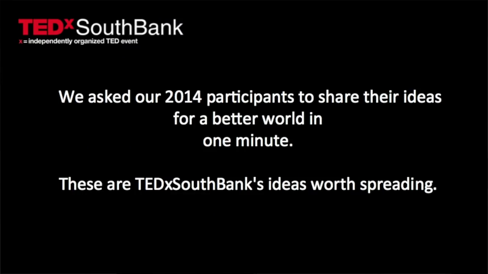
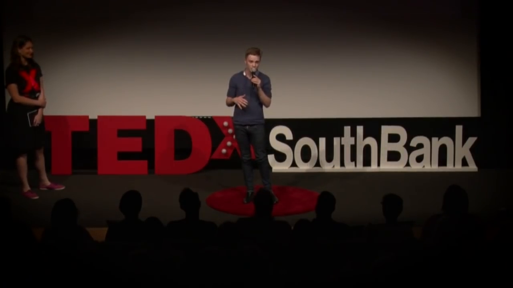

10s: over the past 2 years youth unemployment has been on the rise it currently represents just under 40% of all unemployment in Australia

20s: young graduates leaving University and finding it more and more difficult to enter any form of creative industry now the common stipulation is that you can't get a job without
30s: experience but you can't get a job to get the experience now meanwhile 42% of small businesses failed in 2003 to
40s: and the figures have an improved much amongst many reasons this is happening is a consistent lack of quality in their branding marketing websites
50s: the kind of training that these graduates have just spent 3 to 6 years training for now what if there was an enterprise that

60s: which these two sets of frightening statistics I want to build that bridge